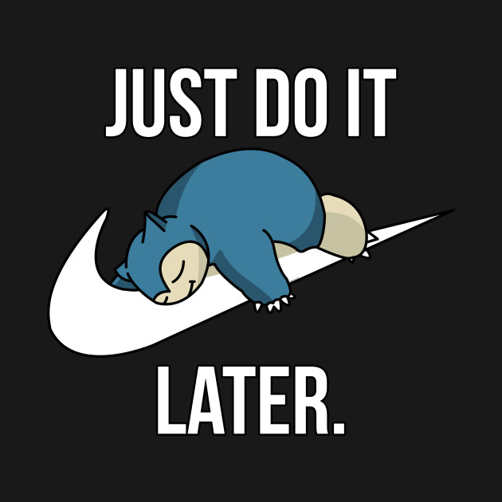

I have been thinking of updating my blog for more than a month now and you all guessed it right, I procrastinated. What better way to update it, than write a post about procrastination. When someone asks me “What am I good at”? my immediate answer would be procrastination. I am a full-time procrastinator! I don’t understand why I do it and how I do it, but at the end of the day I realize that I wasted it procrastinating. I have watched many motivational talks on how not to procrastinate, all this while I was procrastinating, but nothing has stopped me from procrastinating :(. If I had a penny for every time I procrastinated, I am sure I would be a millionaire by now.
When I start pondering over why I procrastinate, the only reason I could think of “Instant Gratification”. We millennials forgo long-term pleasure in favour of short-term pleasure. And why would we do that? My guess would be that there is a reward mechanism in the brain, that would reward you for doing so, a la drug addiction.
And coming to the part of overcoming procrastination - which I have failed time and again, I guess effective planning and having a sense of urgency in getting work done would help. If the panic of not getting sh*t done sets in early enough, that would help us procrastinators a great deal. The only constructive thing born from procrastination, is this blog post :).
P.S. Meme all the things.
